A nossa história
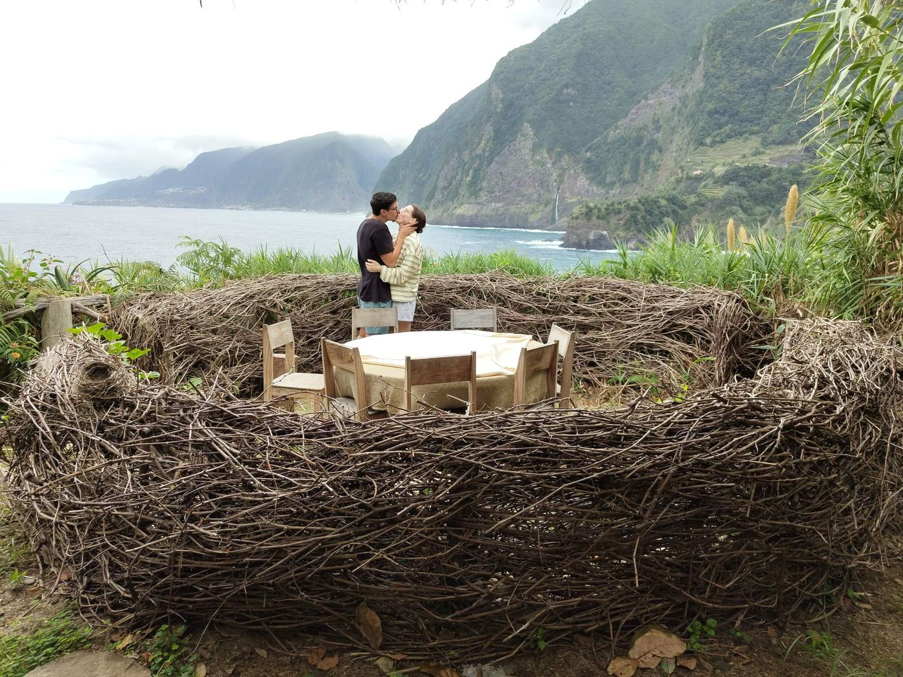
A nossa história começou em Coimbra, quando andávamos na Universidade, e deu algumas voltas até chegar aqui.
- 2016
Coimbra
Conhecemo-nos a trabalhar juntos numa Queima das Fitas.
- 2019Verão
O reencontro
Uma simples conversa que nunca mais acabou. Estamos juntos desde o verão desse ano.
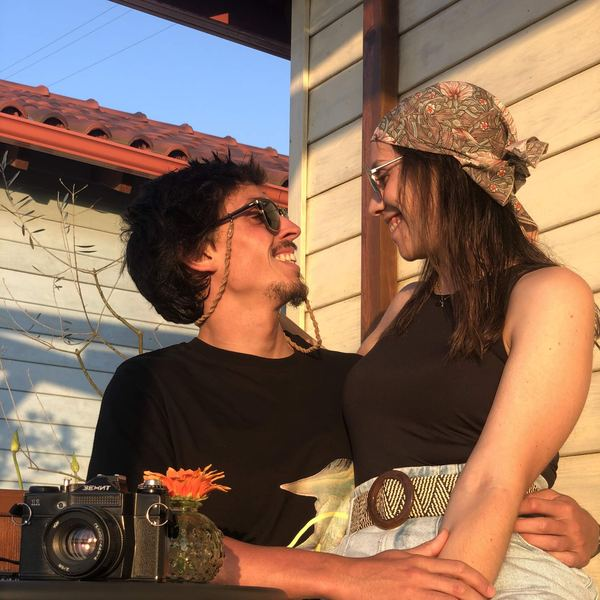
- 2019Setembro
Aveiro
A nossa primeira viagem juntos, para ver o Tim Bernardes, um dos nossos artistas favoritos.
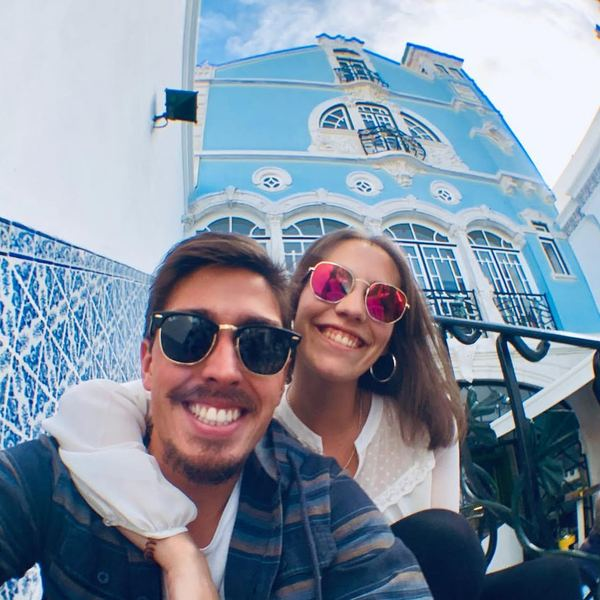
- 2019Fim de ano
Marvão
A primeira passagem de ano juntos.
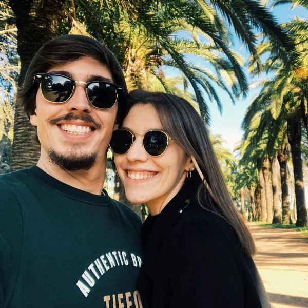
- 2020Setembro
Costa Vicentina
As primeiras férias juntos, a acampar.
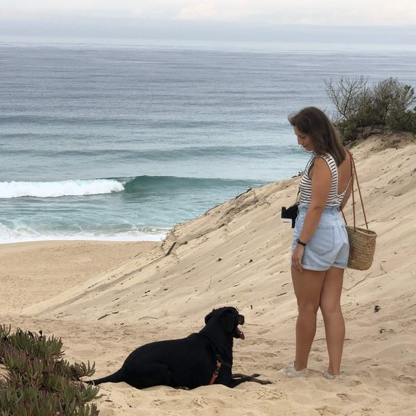
- 2020Covid
Caldas da Rainha
Dois confinamentos, 24 horas por dia um com o outro. Foi aí que percebemos que estávamos destinados: se aguentámos aquilo, era bom sinal.
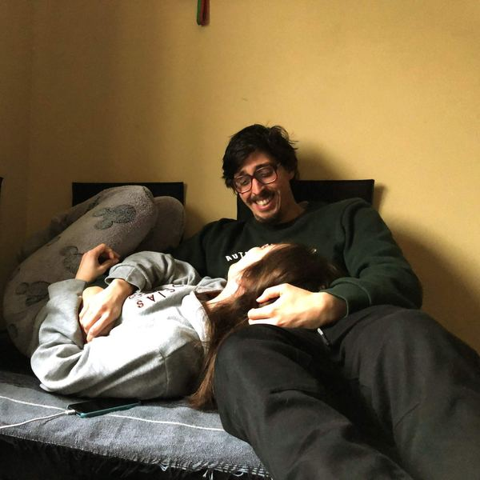
- 2020Fim de ano
Coimbra outra vez
A passagem de ano de volta à nossa cidade.
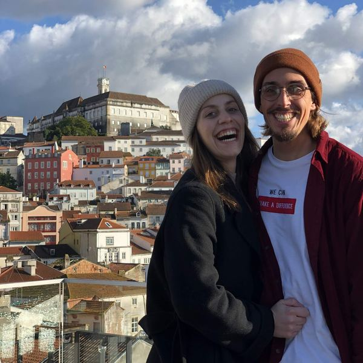
- 2021Verão
A nossa casa
Comprámos casa nas Caldas da Rainha.
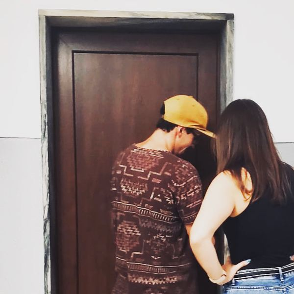
- 2021Setembro
Algarve
Férias num sítio onde a Pipa nunca tinha ido.
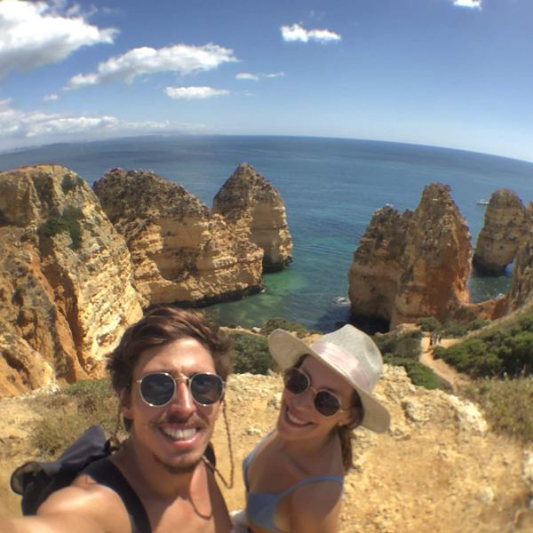
- 2022Outubro
Florença e Pisa
A nossa primeira grande viagem.
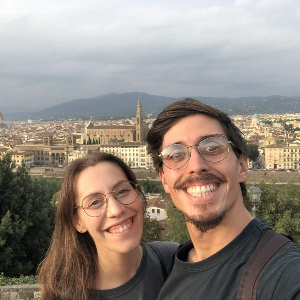
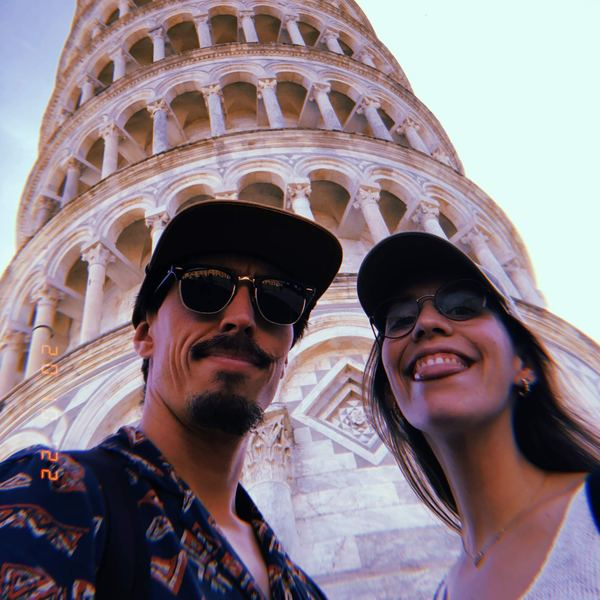
- 2023Novembro
Barcelona
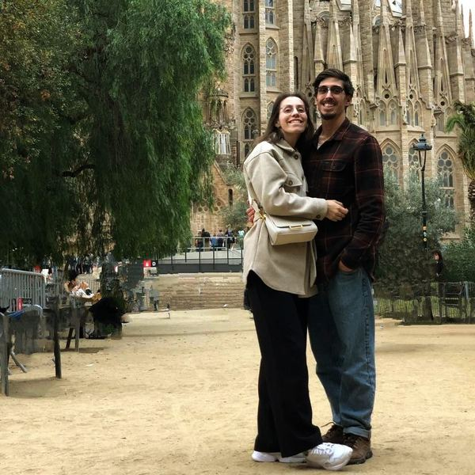
- 2024Maio
Málaga
Com amigos.
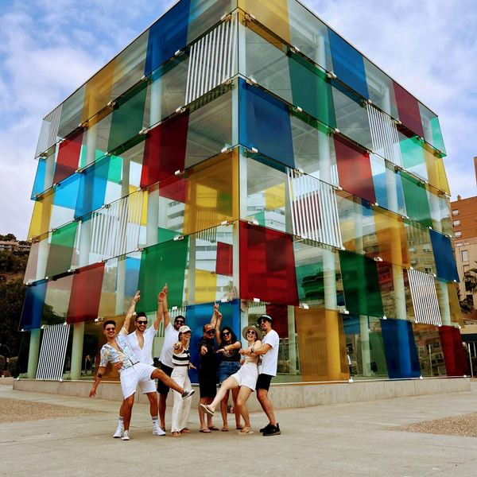
- 2025Verão
Tudo mudou nas nossas vidas
- 2026Outubro
Madeira
Voltámos a viajar.
- Agora
Japão
Três semanas na viagem dos nossos sonhos.
Somos muito diferentes e, mesmo assim, sempre nos entendemos bem. Uma das coisas que mais gostamos de fazer juntos é viajar, e esta é a nossa viagem de sonho.
Desde sempre que temos uma enorme curiosidade pelo Japão. É um país que fascina pela sua cultura, pelas tradições, pela gastronomia, pelas paisagens e pela forma tão única como consegue juntar o passado e o futuro.
Poder conhecer de perto os templos, passear pelas ruas de Tóquio, descobrir os recantos de Quioto, experimentar a verdadeira comida japonesa e viver tudo aquilo que até agora só vimos em fotografias, é um sonho que queremos muito concretizar.
Esta viagem representa a oportunidade de conhecer uma cultura completamente diferente, sair da rotina, criar memórias inesquecíveis e viver uma experiência que vamos guardar para sempre.
Não temos lista de casamento, porque o que realmente queremos não cabe numa caixa com laço. Por isso criámos este caderno de carimbos: cada contribuição é um carimbo numa experiência concreta da viagem. Quem contribui fica no nosso caderno, e nós ficamos com a certeza de que aquele momento também é seu.
E quanto é preciso? Nada. A vossa presença no casamento já é o presente maior. Se mesmo assim quiserem fazer parte desta aventura, podem dar o valor que entenderem: os valores abaixo são só uma sugestão, e há um carimbo onde escolhem a quantia. Sem pressão e sem obrigação.
Prometemos postais, fotografias e, pelo menos, uma história embaraçosa por semana.
Uma simples conversa que nunca mais acabou.